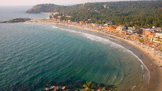
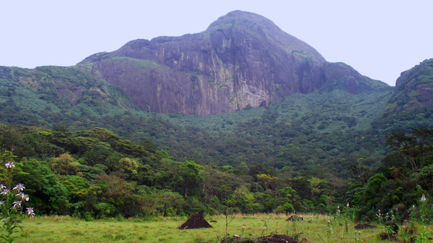
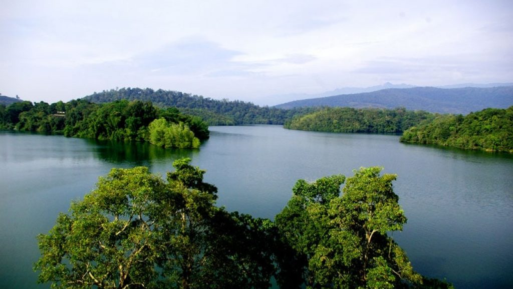
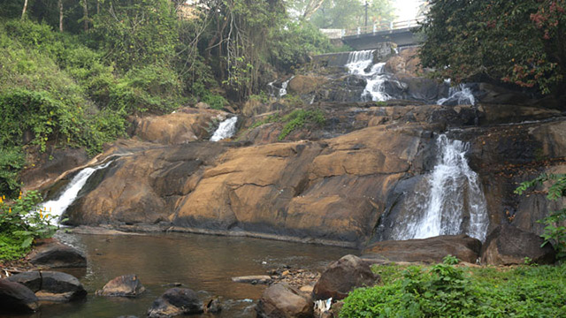
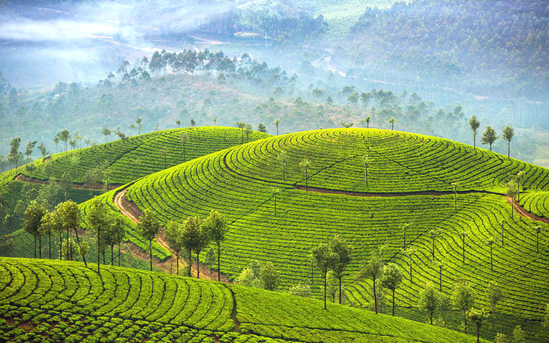

TOP DESTINATIONS
-

Kovalam
Kovalam is an internationally renowned beach with three adjacent crescent beaches. It has been a favourite haunt of tourists since the 1930s. A massive rocky promontory on the beach has created a beautiful bay of calm waters ideal for sea bathing. The leisure options at this beach are plenty and diverse. Sunbathing, swimming, herbal body toning massages, special cultural programmes and catamaran cruising are some of them. The tropical sun acts so fast that one can see the faint blush of coppery tan on the skin in a matter of minutes. Life on the beach begins late in the day and carries on well into the night. The beach complex includes a string of budget cottages, Ayurvedic health resorts, convention facilities, shopping zones, swimming pools, Yoga and Ayurvedic massage centres. Accommodation facilities for tourists at Kovalam range from five star hotels to budget hotels and the choice of food available at restaurants and cafeterias range from Continental varieties to South Indian delicacies. Thiruvananthapuram, the capital city of Kerala, is just 16 km away from Kovalam and getting there is no hassle. But if you are on holiday it is better to stay in Kovalam and visit the city. The city of Thiruvananthapuram has many interesting places to see like the Napier Museum, the Sri Chitra Art Gallery and the Padmanabhaswamy Temple. The SMSM Institute, a State owned handicrafts emporium, is the ideal place to pick up ethnic curios and other articles.
-

Pathmanabha
Located inside the East Fort in Thiruvananthapuram, the capital city of the State of Kerala in India is the Sree Padmanabha Swamy Temple dedicated to Lord Vishnu. This temple is a blend of the Kerala and Dravidian styles of architecture. It is believed to be the world’s richest temple. The history of Sree Padmanabhaswamy Temple dates back to 8th century. It is one of the 108 sacred Vishnu temples or Divya Desams in India. Divya Desams are the holiest abodes of Lord Vishnu that are mentioned in the works of the Tamil Azhvars (saints). The presiding deity of this temple is Lord Vishnu, reclining on Anantha, the hooded Serpent. Marthanda Varma, noted among Travancore kings, did a major renovation to the temple and it resulted in the present day structure of the Sree Padmanabhaswamy Temple. It was Marthanda Varma who introduced the Murajapam and Bhadra Deepam festivals in the temple. Murajapam, which literally means continuous chanting of prayers, is still conducted in the temple once every six years. In 1750, Marthanda Varma dedicated the kingdom of Travancore to Lord Padmanabha. Marthanda Varma vowed that the royal family will rule the State on behalf of the Lord and he and his descendants would serve the kingdom as Padmanabha Dasa or the Servant of Lord Padmanabha. Since then the name of every Travancore King was preceded by the title Padmanabha Dasa. The donation of the kingdom of Travancore to Padmanabhaswamy was known as Thripadidanam. Thiruvananthapuram, the capital city of Kerala takes its name from the presiding deity of the Sree Padmanabhaswamy Temple, who is also known as Anantha (one who reclines on the Serpent Anantha). The word 'Thiruvananthapuram' literally means - the Land of Sree Anantha Padmanabhaswamy. The Sree Padmanabhaswamy Temple as per belief is located at a place that is considered as one of the seven Parasurama Kshetras. There are references to the temple in texts like the Puranas, viz. the Skanda Purana and Padma Purana. The temple stands close to the holy tank - Padma Theertham, which means 'lotus spring.' The shrine is currently run by a trust headed by the erstwhile royal family of Travancore.
-

Agasthyarkoodam
Agasthyakoodam is nature’s ode to bird watchers. One of the highest peaks in Kerala, it has long been known as a bird watcher’s paradise and many gather here to catch sight of exotic avian species. It can be viewed from near Neyyar Dam as well as Bonacaud. Agasthyakoodam is also known for its remarkable flora and fauna, especially certain rare medicinal herbs which have been discovered here. Over 2000 species including lichens, orchids, mosses and ferns have been recorded in the area. The peak was named after the sage Agasthya and is a popular pilgrim site. A shrine dedicated to him is located here and is frequented by devotees. The air itself is said to have medicinal qualities. The peak is a 90 minute drive with Bonacaud being the last motorable spot. Trekking is restricted as only a few people are allowed to go up the peak. One must get a forest pass from the wildlife office in Thiruvananthapuram with January to April being the recommended months.
-

Neyyardam
Neyyar dam is a gravity dam on the Neyyar River in Thiruvananthapuram district of Kerala, South India, located on the foot of the Western Ghats about 30 km from Thiruvananthapuram.It was established in 1958 and is a popular picnic spot. Lying against the southern low hills of the Western Ghats, Neyyar Dam has a scenic lake. Neyyar dam is situated at Kallikkad Panchayath of Kattakkada Taluk of Trivandrum district. The peak Agasthya kooodam is very near to Neyyar dam. The dam was built in the land given by an agriculturist known as Karuvachiyil Krishan Panicker, Father of Janaki Thankamma, Maruthummoottil family, and his other family members for irrigation purposes. One canal of Neyyar flows to western districts of Tamil Nadu. The main river Neyyar flows through Kallikkadu, Ottasekharamangalam, Aryancode, Kezharoor, Perumkadavila, Marayamuttom, Neyyattinkara and Poovar and ends at the Arabian Sea.
-

Aruvikkara
Aruvikkara is a panchayat in Thiruvananthapuram district in the state of Kerala, India.[1] It is located on the banks of the Karamana River 15 km from Thiruvananthapuram, the capital of the state of Kerala in South India and one of the 12 panchayats that shares border with Thiruvananthapuram Municipal Corporation. The reservoir and garden makes it a tourist spot. It is famous for the ancient Bhagavathi temple dedicated to Durga, the divine embodiment of female power, which is built on a rock. The stream in front of the temple contains large fishes, which are fed by the devotees visiting the shrine. The headquarters of the Wellington Water Distribution project is located here. The small Aruvikkara Dam (mini dam) which provides water to the state capital Thiruvananthapuram. G.Stephen of CPI(M) is the sitting MLA of Aruvikkara constituency to the Kerala Legislative Assembly.
-

Munnar
Munnar rises as three mountain streams merge - Mudrapuzha, Nallathanni and Kundala. 1,600 m above sea level, this hill station was once the summer resort of the erstwhile British Government in South India. One of the most sought after honeymoon destinations in Kerala, Munnar is replete with resorts and logding facilities that fit a wide rage of budgets. Sprawling tea plantations, picturesque towns, winding lanes and holiday facilities make this a popular resort town. Among the exotic flora found in the forests and grasslands here is the Neelakurinji. This flower which bathes the hills in blue once in every twelve years, will bloom next in 2030. Munnar also has the highest peak in South India, Anamudi, which towers over 2,695 m. Let us now explore some of the options in and around Munnar that would provide travellers ample opportunities to enjoy the captivating hill station of Munnar.